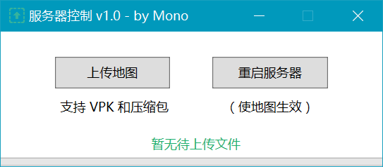

自动化传图
复杂性不能消除，只可能隐藏
目标
我想让其他好友在无需登录服务器的情况下，也能够安装地图。
也即，在不知道服务器账号密码（甚至不知道 SSH，不知道 Linux）的情况下，将一个 VPK 文件放置到某个目录中，然后发送 SIGTERM 给游戏进程，使它重启。
这是可能做到的吗？
当然，不然也不会有这篇文章了。
实现思路
首先，说到文件传输协议，最简单的就是 FTP 了，所以我们可以建立一个 FTP 目录用来放置上传文件。
那么如何自动安装呢？简单搜索，我找到了一个工具：iwatch.
查看手册可知，它可以监视一个目录下的所有文件操作，并触发相应命令，听起来正是我们需要的。
只需要在发现新文件时，将其解压到指定目录就可以了。
Ok，我们逐一考察各部分工作：
FTP
之前已经配置好了一个公共匿名 FTP，但直接用它上传显然是不安全的，因此我们建立一个用户，并且只有它能上传 FTP（仅显示部分配置）：
/etc/vsftpd.conf
write_enable=YES # 启用文件写入
local_enable=YES # 允许本地用户登录
user_sub_token=$USER
local_root=/var/ftp/$USER # 我已经将用户家目录设置到了这里
chroot_local_user=YES # 限制本地用户到家目录
userlist_enable=YES
userlist_file=/etc/vsftpd.allow
chown_uploads=YES
chown_username=yxnan # 上传后将文件所有者改成我们自己
local_umask=000 # 方便我们作为 Others 进行操作
ssl_enable=YES
allow_anon_ssl=NO
force_local_logins_ssl=YES # 强制启用安全连接（需要自行配置证书）
force_local_data_ssl=YES
除此之外，我们还需要正确设置目录权限，使得 FTP 用户可以上传文件，但无法删除上传目录本身。
目录监视
我们需要在上传完成时取得目标文件，因此应该监视文件关闭动作，如下：
~/watch-ftp
#!/bin/bash
screen -dm -S watch iwatch -e close_write -c "~/process-file" /var/ftp/[USER]/upload
其中，
~/process-file 是我们将要编写的处理脚本。
实际上，
iwatch 可以用
%f 代表触发动作的文件，但我在测试中发现，它不支持中文，因此只好在处理脚本里手动读取。
（等有时间了翻翻它的源码，加上中文支持）
处理脚本
这里是重中之重，我将实现 VPK 及常见压缩包的自动安装，以及接受重启命令：
~/process-file
#!/bin/bash
upload_dir=/var/ftp/[USER]/upload
log_file=~/watch_log.txt
log_file_pub=~/site/misc/watch_log.txt
logwrite() {
echo "[`date +%m/%d/%y-%H:%M:%S`] $1" >> $log_file
}
log_final() {
echo >> $log_file
iconv -f utf8 -t gbk $log_file > $log_file_pub
}
# 检查不合法上传
if ! [[ $(ls -1 $upload_dir | head -1) =~ vpk|zip|rar|7z|restart ]]; then
rm -rf $upload_dir/*
exit
fi
# 处理重启服务器指令
reset_cmd="$upload_dir/restart"
if [ -e $reset_cmd ]; then
screen -S l4d2 -X stuff "quit^M" # 重启服务器
logwrite "服务器重启"
rm -rf $reset_cmd
log_final && exit
fi
# 处理地图上传
fullpath=$(ls -1 $upload_dir/*.{vpk,zip,rar,7z} | head -1) # 取得上传的文件
filename=$(basename "$fullpath")
VPK=~/.local/bin/vpk
UNVPK=~/.local/bin/unvpk
GETMAPCMD=~/getmapcmd
# 精简vpk文件，取得建图代码，并安装
process_vpk () {
vpk_tmp=$(mktemp -d -t vpk-XXXX)
vpk_name="$(basename "$1")"
vpk_dist="$ADDONS/$vpk_name"
# vpk 解包有很小几率编码错误，使用 unvpk
unvpk_result=$($UNVPK -C $vpk_tmp "$1" | tail -1)
logwrite "unvpk: $unvpk_result"
cd $vpk_tmp && mv ' '/* .
shopt -s extglob
eval 'rm -rf !(maps|missions|models|scripts|addoninfo.txt)'
if [ -e missions ]; then
mapcmd="，建图代码：$(ls missions/* | $GETMAPCMD)"
fi
$VPK -c $vpk_tmp "$vpk_dist" && cd -
if [ -e "$vpk_dist" ]; then
logwrite "地图已安装$mapcmd"
else
logwrite "地图安装失败，请联系管理员解决"
fi
rm -rf $vpk_tmp
}
unar_tmp=$(mktemp -d -t unar-XXXX)
logwrite "收到文件：$filename"
if [ ${filename: -4} == ".vpk" ]; then
process_vpk "$fullpath"
elif unar -o $unar_tmp "$fullpath"; then
rm -rf "$fullpath"
find $unar_tmp -name '*.vpk' | while read vpk_file
do
logwrite "成功解压：$(basename "$vpk_file")"
process_vpk "$vpk_file"
done
else
logwrite "试图解压失败，放弃文件"
fi
rm -rf $unar_tmp "$fullpath"
log_final
你看到了我是怎样实现重启的吗？
注意，我这里假设了同一时间只会有一个文件传输完成（上面对
ls 输出取了
head -1）
这是一个暂时的权宜之计，等到
iwatch 支持中文后，就可以直接传入文件名，不需要自己读了。
为方便起见，这里已经把 log 放置到了 https 服务器上，直接在网页里就能查看：
watch_log.txt
一键上传
实际上，整套流程已经可以正常工作了，只需要把 FTP 账号密码告诉小伙伴就可使用。
“但是，FTP 我也弄不明白，该怎么办呢？”
（没救了，等死吧.jpg）
这里就需要终极保姆服务了：

怎么样，现在还有人说不会？罚你去把 hehe 全系列单通一遍 :-)
PS
上面用到的部分工具：
Linux Dev Toolchain Collection
（我自己的 Steam 指南，引 流 之 主）